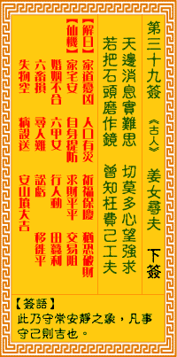

观音灵签第三十九签 【姜女寻夫】 |
 | |||
天边消息应难问 切莫私心强望求 若把石头磨作镜 精神枉费一时休 |
||||
| 【吉凶】 | 下下签 | 【宫位】 | 酉宫 | |
| 【签语】 | 此卦守常安静之象，凡事守己则吉也。 | |||
| 【解曰】 | 千般用计 徒劳无功 不如守旧 着甚来由 | |||
| 【仙机】 | 此签家宅安，自身提防，求财平平，交易阻，婚姻不合，六甲女，行人动，田蚕利，六畜损，寻人难，讼亏，移徙平，失物空，病殁送安 ，山坟大吉。 | |||
| 【详解】 | 就像未知的事情难以预料，别只顾自己有所强求;就好像想用石头来磨成一面明镜，恐怕耗尽精神心力也只是徒然。 千般用计，一旦皆空，安静守旧，不必强求。此签安静守旧之象。 本签告之于弟子曰。若把石头磨成镜。精神枉费一时休之安静守旧之象也。一切事宜皆在低潮中。宜小心。小心。如六畜之损。田亩之亏。宜拾旧图新。适合时潮。方能振兴起色。六甲生女亦不必气馁。宜积德。修身为先。必有赖之。易言之。千般用计届时皆空心守旧。不必强求者。 此签有”积怨难消”之意。奉劝当事人，勿存心不良。有些人一旦受到不留情的指责或羞辱，就会觉得难以忍受、恼羞成怒。为了达到报复的目的，甚至想利用不相干的人。须知在愤怒当头时，很容易失去理智，产生不好的念头，做出失当的行为。当思”说者无心”，宽容原谅。有些话听过就算了，实在不必因此而耿耿于怀、把自己气得半死，更不应怀恨在心、挟怨报复。另外，自己本身的事，切勿牵连到不相干的人身上。所谓”己所不欲，勿施于人”。 | |||
| 【典故】 | 秦始皇为了防卫国土，动用了五十万农民，在北方建筑长城，万喜良和孟姜女是对新婚夫妇。丈夫被召去建长城，多年不回家，亦无音信 ，孟姜女为了寻找丈夫，千山万水，走到了人们在建长城的地方，她知道丈夫在工作中死了，悲痛万分，号啕大哭，哭声震动大地，连长城也在这时倒塌了一段。 | |||